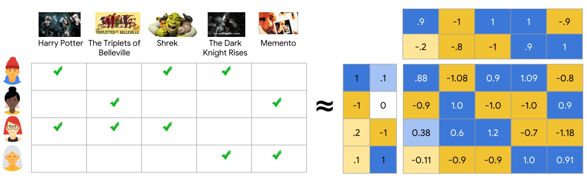
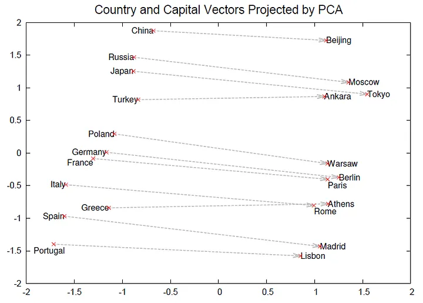
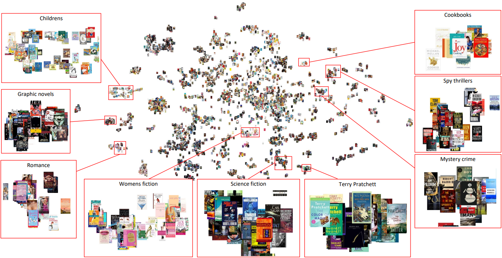

From Collaborative Filtering to Modern Embeddings
The Problem
Too many choices, too little time
Without recommendations:
With recommendations:
Users rate items explicitly (e.g., 1-5 stars)
| Titanic | Alien | Shrek | Avatar | |
|---|---|---|---|---|
| Alice | ⭐⭐⭐⭐⭐ | ? | ⭐⭐⭐⭐ | ? |
| Bob | ? | ⭐⭐⭐⭐ | ? | ⭐⭐ |
| Carol | ⭐⭐⭐⭐ | ? | ⭐⭐ | ? |
Goal: Predict missing ratings (?)
Challenge: Matrix is extremely sparse! (>99% missing in practice)
Explicit ratings are rare! Most interactions are implicit:
Interaction Matrix (binary: 0/1)
| Titanic | Alien | Shrek | Avatar | |
|---|---|---|---|---|
| Alice | ✅ | ✅ | ||
| Bob | ✅ | |||
| Carol | ✅ |
Rating Matrix R
Interaction Matrix X
Modern systems: Primarily use implicit feedback
Why? More data, less user friction
Key Insight: Users with similar tastes in the past will have similar tastes in the future
User-based CF
Item-based CF
Pioneered by GroupLens (Resnick et al., 1994)
Idea: Decompose sparse rating matrix into latent factors
\[R \approx U \times V^T\]

Matrix factorization visualization. Source: Google ML Guide
From Koren et al. (2009) (Koren et al., 2009)
Each movie and user represented in latent space
Prediction: Dot product of user and item vectors
Beyond just interactions: Use metadata to improve recommendations
User Metadata
Item Metadata
Benefit: Helps with cold-start (new users/items)
Enables content-based filtering
Key idea from NLP (Mikolov et al., 2013):
Words with similar contexts have similar meanings
Skip-gram architecture:

Word2Vec capitals example (Mikolov et al., 2013)
Vector arithmetic: King - Man + Woman ≈ Queen

Book recommendations example (Vančura et al., 2022)
Key idea: Random walks in graphs (Grover & Leskovec, 2016)
Almost any data can be represented as a graph
Learn embeddings that capture graph structure
Dominant architecture for retrieval
Query Tower
Item Tower
Scoring: Dot product of embeddings
\[\text{score}(u, i) = \text{user_emb}(u) \cdot \text{item_emb}(i)\]
Key advantage: Decouple user and item computation
YouTube (Covington et al., 2016):
Goal: Fast reduction from millions to hundreds
Speed >> Accuracy
Goal: Precise scoring of candidates
Accuracy >> Speed